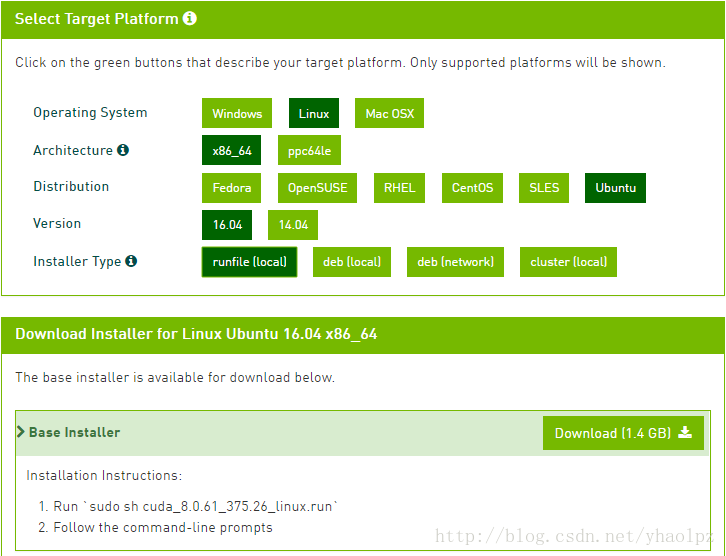
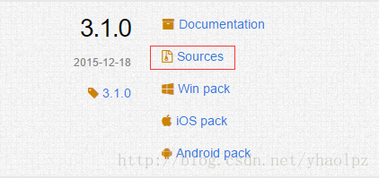
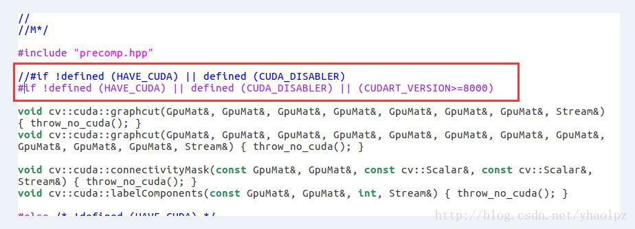
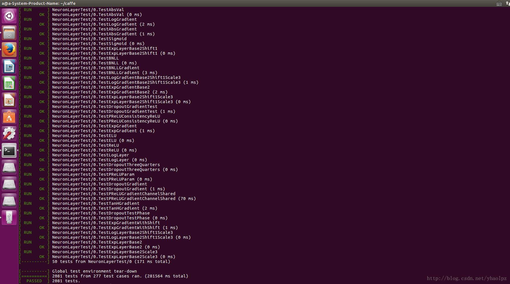
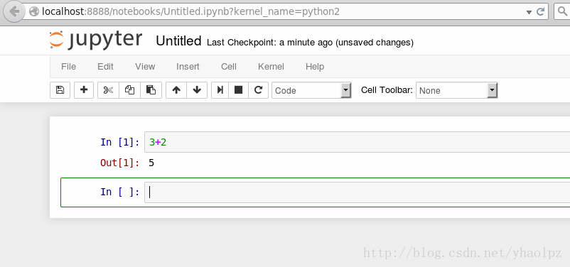

转载自https://blog.csdn.net/yhaolpz/article/details/71375762
历时一周终于在 ubuntu16.04 系统成功安装 caffe
并编译，网上有很多教程，但是某些步骤并没有讲解详尽，导致配置过程总是出现各种各样匪夷所思的问题，尤其对于新手而言更是欲哭无泪，在我饱受折磨后决定把安装步骤记录下来，尽量详尽清楚明白，避免后来小白重蹈覆辙。
安装硬件： intel i5 + NVIDIA 740 M
安装流程细分为如下10个步骤，细化步骤粒度更易避免出错：
1、安装依赖包
2、禁用 nouveau
3、配置环境变量
4、下载 CUDA 8.0
5、安装 CUDA 8.0
6、验证 CUDA 8.0 是否安装成功
7、安装 cudnn
8、安装 opencv3.1
9、安装 caffe
10、安装 pycaffe notebook 接口环境
第1步 安装依赖包
安装后续步骤或环境必需的依赖包，依次输入以下命令:
sudo apt-get install libprotobuf-dev libleveldb-dev libsnappy-dev libopencv-dev libhdf5-serial-dev protobuf-compiler
sudo apt-get install --no-install-recommends libboost-all-dev
sudo apt-get install libopenblas-dev liblapack-dev libatlas-base-dev
sudo apt-get install libgflags-dev libgoogle-glog-dev liblmdb-dev
sudo apt-get install git cmake build-essential- 有一定几率安装失败而导致后续步骤出现问题，所以要确保以上依赖包都已安装成功，验证方法就是重新运行安装命令，如验证 git cmake build-essential是否安装成功共则再次运行以下命令：
sudo apt-get install git cmake build-essential 界面提示如下则说明已成功安装依赖包，否则继续安装直到安装成功。
yhao@yhao-X550VB:~$ sudo apt-get install git cmake build-essential
正在读取软件包列表... 完成
正在分析软件包的依赖关系树
正在读取状态信息... 完成
build-essential 已经是最新版 (12.1ubuntu2)。
cmake 已经是最新版 (3.5.1-1ubuntu3)。
git 已经是最新版 (1:2.7.4-0ubuntu1.1)。
下列软件包是自动安装的并且现在不需要了：
lib32gcc1 libc6-i386
使用'sudo apt autoremove'来卸载它(它们)。
升级了 0 个软件包，新安装了 0 个软件包，要卸载 0 个软件包，有 94 个软件包未被升级。第2步 禁用 nouveau
安装好依赖包后需要禁用 nouveau，只有在禁用掉 nouveau 后才能顺利安装 NVIDIA 显卡驱动，禁用方法就是在
/etc/modprobe.d/blacklist-nouveau.conf 文件中添加一条禁用命令，首先需要打开该文件，通过以下命令打开：
sudo gedit /etc/modprobe.d/blacklist-nouveau.conf打开后发现该文件中没有任何内容，写入：
blacklist nouveau option nouveau modeset=0 保存时命令窗口可能会出现以下提示：
** (gedit:4243): WARNING **: Set document metadata failed: 不支持设置属性 metadata::gedit-position无视此提示 ～，保存后关闭文件，注意此时还需执行以下命令使禁用 nouveau 真正生效：
sudo update-initramfs -u第3步 配置环境变量
同样使用 gedit 命令打开配置文件：
sudo gedit ~/.bashrc打开后在文件最后加入以下两行内容：
export LD_LIBRARY_PATH=/usr/lib/x86_64-linux-gnu:$LD_LIBRARY_PATH
export LD_LIBRARY_PATH=/lib/x86_64-linux-gnu:$LD_LIBRARY_PATH 保存退出。
第4步 下载 CUDA 8.0
进入 https://developer.nvidia.com/cuda-downloads ，依次选择 CUDA 类型然后下载即可。

第5步 安装 CUDA 8.0
第四步下载的1.4G的 CUDA中包含有 nvidia 显卡驱动，故此步骤 CUDA 的安装包括了 nvidia 显卡驱动的安装，此时注意你是否已经安装过
nvidia 显卡驱动，若无法保证已安装的 nvidia 显卡驱动一定正确，那就卸载掉之前安装的 nvidia
显卡驱动（卸载方法链接)，然后开始安装
CUDA 8.0；若可以保证已安装正确的 nvidia 显卡驱动，则直接开始安装 CUDA 8.0，在安装过程中选择不再安装 nvidia 显卡驱动。
为了方便开始安装过程的路径查找，把下载的 CUDA 安装文件移动到 HOME 路径下，然后通过 Ctrl + Alt + F1
进入文本模式，输入帐号密码登录，通过 Ctrl + Alt + F7 可返回图形化模式，在文本模式登录后首先关闭桌面服务：
sudo service lightdm stop然后通过 Ctrl + Alt + F7 发现已无法成功返回图形化模式，说明桌面服务已成功关闭，注意此步对接下来的 nvidia
驱动安装尤为重要，必需确保桌面服务已关闭。
Ctrl + Alt + F1 进入文本模式，然后运行 CUDA 安装文件进行安装，之前我们已经把 CUDA 安装文件移动至 HOME，直接通过 sh
命令运行安装文件即可：
sudo sh cuda_8.0.61_375.26_linux.run --no-opengl-libs其中 cuda_8.0.61_375.26_linux.run 是我的 CUDA 安装文件名，而你需替换为自己的 CUDA 安装文件名，若此时忘记可直接通过
ls 文件查看文件名，这也是我建议把 CUDA 安装文件移动到 HOME 下的另一个原因。
执行此命令约1分钟后会出现 0%信息，此时长按回车键让此百分比增长，直到100%，然后按照提示操作即可，先输入 accept ，然后让选择是否安装
nvidia 驱动，这里的选择对应第5步开头，若未安装则输入 “y”，若确保已安装正确驱动则输入“n”。
剩下的选择则都输入“y”确认安装或确认默认路径安装，开始安装，此时若出现安装失败提示则可能为未关闭桌面服务或在已安装 nvidia 驱动的情况下重复再次安装
nvidia 驱动，安装完成后输入重启命令重启：
reboot重启后登录进入系统，配置 CUDA 环境变量，与第3步相同，使用 gedit 命令打开配置文件：
sudo gedit ~/.bashrc在该文件最后加入以下两行并保存：
export PATH=/usr/local/cuda-8.0/bin:$PATH
export LD_LIBRARY_PATH=/usr/local/cuda/lib64:$LD_LIBRARY_PATH使该配置生效：
source ~/.bashrc第6步 验证 CUDA 8.0 是否安装成功
分别执行以下命令：
cd /usr/local/cuda-8.0/samples/1_Utilities/deviceQuery
sudo make
./deviceQuery若看到类似以下信息则说明 cuda 已安装成功：
./deviceQuery Starting...
CUDA Device Query (Runtime API) version (CUDART static linking)
Detected 1 CUDA Capable device(s)
Device 0: "GeForce GT 740M"
CUDA Driver Version / Runtime Version 8.0 / 8.0
CUDA Capability Major/Minor version number: 3.5
Total amount of global memory: 2004 MBytes (2100953088 bytes)
( 2) Multiprocessors, (192) CUDA Cores/MP: 384 CUDA Cores
GPU Max Clock rate: 1032 MHz (1.03 GHz)
Memory Clock rate: 800 Mhz
Memory Bus Width: 64-bit
L2 Cache Size: 524288 bytes
Maximum Texture Dimension Size (x,y,z) 1D=(65536), 2D=(65536, 65536), 3D=(4096, 4096, 4096)
Maximum Layered 1D Texture Size, (num) layers 1D=(16384), 2048 layers
Maximum Layered 2D Texture Size, (num) layers 2D=(16384, 16384), 2048 layers
Total amount of constant memory: 65536 bytes
Total amount of shared memory per block: 49152 bytes
Total number of registers available per block: 65536
Warp size: 32
Maximum number of threads per multiprocessor: 2048
Maximum number of threads per block: 1024
Max dimension size of a thread block (x,y,z): (1024, 1024, 64)
Max dimension size of a grid size (x,y,z): (2147483647, 65535, 65535)
Maximum memory pitch: 2147483647 bytes
Texture alignment: 512 bytes
Concurrent copy and kernel execution: Yes with 1 copy engine(s)
Run time limit on kernels: No
Integrated GPU sharing Host Memory: No
Support host page-locked memory mapping: Yes
Alignment requirement for Surfaces: Yes
Device has ECC support: Disabled
Device supports Unified Addressing (UVA): Yes
Device PCI Domain ID / Bus ID / location ID: 0 / 1 / 0
Compute Mode:
< Default (multiple host threads can use ::cudaSetDevice() with device simultaneously) >
deviceQuery, CUDA Driver = CUDART, CUDA Driver Version = 8.0, CUDA Runtime Version = 8.0, NumDevs = 1, Device0 = GeForce GT 740M
Result = PASS第7步 安装 cudnn
登录官网：https://developer.nvidia.com/rdp/cudnn-download ，下载对应 cuda 版本且 linux
系统的 cudnn 压缩包，注意官网下载 cudnn
需要注册帐号并登录，不想注册的可从我的网盘下载：https://pan.baidu.com/s/1c2xPVzy

下载完成后解压，得到一个 cudn 文件夹，该文件夹下include 和 lib64 两个文件夹，命令行进入 cudn/include
路径下，然后进行以下操作：
sudo cp cudnn.h /usr/local/cuda/include/ #复制头文件然后命令行进入 cudn/lib64 路径下，运行以下命令：
sudo cp lib* /usr/local/cuda/lib64/ #复制动态链接库
cd /usr/local/cuda/lib64/sudo rm -rf libcudnn.so libcudnn.so.5 #删除原有动态文件
sudo ln -s libcudnn.so.5.1.10 libcudnn.so.5 #生成软衔接
sudo ln -s libcudnn.so.5 libcudnn.so #生成软链接这里需要注意第三行命令，网上有人的第三行命令为：
sudo ln -s libcudnn.so.5.1.5 libcudnn.so.5 #生成软衔接起初我执行的也是上条链接 libcudnn.so.5.1.5 的命令，但是后面编译caffe时出错，报错内容为 /usr/bin/ld: 找不到
-lcudnn，所以这里需要先查看一下自己应该链接的是 libcudnn.so.5.1.10 还是 libcudnn.so.5.1.5 ，查看方法为下：
locate libcudnn.so我执行完后显示如下：
yhao@yhao-X550VB:~$ locate libcudnn.so
/home/yhao/.local/share/Trash/files/libcudnn.so
/home/yhao/.local/share/Trash/files/libcudnn.so.5
/home/yhao/.local/share/Trash/files/libcudnn.so.5.1.10
/home/yhao/.local/share/Trash/files/cuda/lib64/libcudnn.so
/home/yhao/.local/share/Trash/files/cuda/lib64/libcudnn.so.5
/home/yhao/.local/share/Trash/files/cuda/lib64/libcudnn.so.5.1.10
/home/yhao/.local/share/Trash/info/libcudnn.so.5.1.10.trashinfo
/home/yhao/.local/share/Trash/info/libcudnn.so.5.trashinfo
/home/yhao/.local/share/Trash/info/libcudnn.so.trashinfo
/home/yhao/cuda/lib64/libcudnn.so
/home/yhao/cuda/lib64/libcudnn.so.5
/home/yhao/cuda/lib64/libcudnn.so.5.1.10
/usr/local/lib/libcudnn.so
/usr/local/lib/libcudnn.so.5可以看到我的文件是 libcudnn.so.5.1.10 ，并没有 libcudnn.so.5.1.5，所以第三行命令我链接的是
libcudnn.so.5.1.10 ，这里第三行链接命令视你的查看结果而定。
安装完成后可用 nvcc -V 命令验证是否安装成功，若出现以下信息则表示安装成功：
yhao@yhao-X550VB:~$ nvcc -V
nvcc: NVIDIA (R) Cuda compiler driver
Copyright (c) 2005-2016 NVIDIA Corporation
Built on Tue_Jan_10_13:22:03_CST_2017
Cuda compilation tools, release 8.0, V8.0.61第8步 安装 opencv3.1
进入官网 : http://opencv.org/releases.html , 选择 3.1.0 版本的 source , 下载
opencv-3.1.0.zip

解压到你要安装的位置，命令行进入已解压的文件夹 opencv-3.1.0 目录下，执行：
mkdir build # 创建编译的文件目录
cd build
cmake -D CMAKE_BUILD_TYPE=Release -D CMAKE_INSTALL_PREFIX=/usr/local ..
make -j8 #编译在执行 make -j8 命令编译到 92% 时可能会出现以下错误：
modules/cudalegacy/src/graphcuts.cpp:120:54: error:
‘NppiGraphcutState’ has not been declared
typedef NppStatus (*init_func_t)(NppiSize oSize,
NppiGraphcutState** ppState, Npp8u* pDeviceMem);这是由于opecv3.1与cuda8.0不兼容导致的。解决办法：
修改 /opencv-3.1.0/modules/cudalegacy/src/graphcuts.cpp 文件内容，如图：

编译成功后安装：
sudo make install #安装安装完成后通过查看 opencv 版本验证是否安装成功：
pkg-config --modversion opencv 第9步 安装 caffe
首先在你要安装的路径下 clone ：
git clone https://github.com/BVLC/caffe.git进入 caffe ，将 Makefile.config.example 文件复制一份并更名为 Makefile.config ，也可以在 caffe
目录下直接调用以下命令完成复制操作 ：
sudo cp Makefile.config.example Makefile.config复制一份的原因是编译 caffe 时需要的是 Makefile.config 文件，而Makefile.config.example 只是caffe
给出的配置文件例子，不能用来编译 caffe。
然后修改 Makefile.config 文件，在 caffe 目录下打开该文件：
sudo gedit Makefile.config修改 Makefile.config 文件内容：
1.应用 cudnn
将
#USE_CUDNN := 1
修改成：
USE_CUDNN := 12.应用 opencv 版本
将
#OPENCV_VERSION := 3
修改为：
OPENCV_VERSION := 33.使用 python 接口
将
#WITH_PYTHON_LAYER := 1
修改为
WITH_PYTHON_LAYER := 14.修改 python 路径
INCLUDE_DIRS := $(PYTHON_INCLUDE) /usr/local/include
LIBRARY_DIRS := $(PYTHON_LIB) /usr/local/lib /usr/lib
修改为：
INCLUDE_DIRS := $(PYTHON_INCLUDE) /usr/local/include /usr/include/hdf5/serial
LIBRARY_DIRS := $(PYTHON_LIB) /usr/local/lib /usr/lib /usr/lib/x86_64-linux-gnu /usr/lib/x86_64-linux-gnu/hdf5/serial 如果最后提示不支持compute_20,就把这句删掉，最后效果是
CUDA_ARCH := -gencode arch=compute_30,code=sm_30 \
-gencode arch=compute_35,code=sm_35 \
-gencode arch=compute_50,code=sm_50 \
-gencode arch=compute_52,code=sm_52 \
-gencode arch=compute_60,code=sm_60 \
-gencode arch=compute_61,code=sm_61 \
-gencode arch=compute_61,code=compute_61这里贴出 我的Makefile.config文件
方便大家参考
然后修改 caffe 目录下的 Makefile 文件：
将：
NVCCFLAGS +=-ccbin=$(CXX) -Xcompiler-fPIC $(COMMON_FLAGS)
替换为：
NVCCFLAGS += -D_FORCE_INLINES -ccbin=$(CXX) -Xcompiler -fPIC $(COMMON_FLAGS)
将：
LIBRARIES += glog gflags protobuf boost_system boost_filesystem m hdf5_hl hdf5
改为：
LIBRARIES += glog gflags protobuf boost_system boost_filesystem m hdf5_serial_hl hdf5_serial然后修改 /usr/local/cuda/include/host_config.h 文件 :
将
#error-- unsupported GNU version! gcc versions later than 4.9 are not supported!
改为
//#error-- unsupported GNU version! gcc versions later than 4.9 are not supported!OK ，可以开始编译了，在 caffe 目录下执行 ：
make all -j8这是如果之前的配置或安装出错，那么编译就会出现各种各样的问题，所以前面的步骤一定要细心。
编译成功后可运行测试：
make runtest -j8
如果显示结果为上图所示，则表示 caffe 已经成功安装。
10、安装 pycaffe notebook 接口环境
在上一步成功安装 caffe 之后，就可以通过 caffe 去做训练数据集或者预测各种相关的事了，只不过需要在命令行下通过 caffe
命令进行操作，而这一步 pycaffe 的安装以及 notebook 环境配置只是为了更方便的去使用 caffe ，实际上大多数都是通过 python
来操作 caffe 的，而 notebook 使用浏览器作为界面，可以更方便的编写和执行 python 代码。
首先编译 pycaffe :
cd caffe
make pycaffe -j8以下是我编译 pycaffe 时出现的错误：
python/caffe/_caffe.cpp:10:31: fatal error: numpy/arrayobject.h: 没有那个文件或目录解决方法：
sudo apt-get install python-numpy此外也可能是由于 Makefile.config 文件中 python 路径设置错误出现的错误，可根据上一步检查一下，也可能出现别的错误，百度谷歌之～
编译 pycaffe 成功后，验证一下是否可以在 python 中导入 caffe 包，首先进入 python 环境：
python然后导入 caffe :
>>> import caffe若不报错则表示 caffe 的 python 接口已正确编译，但是应该不会那么顺利，以下是我导入 caffe 时出现的错误：
错误1：
File "<stdin>", line 1, in <module> ImportError: No module named caffe解决方法：
sudo echo export PYTHONPATH="~/caffe/python" >> ~/.bashrc
source ~/.bashrc错误2：
ImportError: No module named skimage.io解决方法：
pip install -U scikit-image #若没有安装pip: sudo apt install python-pipok，最后一步，配置notebook环境
首先要安装python接口依赖库，在caffe根目录的python文件夹下，有一个requirements.txt的清单文件，上面列出了需要的依赖库，按照这个清单安装就可以了。
在安装scipy库的时候，需要fortran编译器（gfortran)，如果没有这个编译器就会报错，因此，我们可以先安装一下。
首先进入 caffe/python 目录下，执行安装代码：
sudo apt-get install gfortran
for req in $(cat requirements.txt); do sudo pip install $req; done安装完成以后执行：
sudo pip install -r requirements.txt就会看到，安装成功的，都会显示Requirement already satisfied, 没有安装成功的，会继续安装。
然后安装 jupyter ：
sudo pip install jupyter安装完成后运行 notebook :
jupyter notebook
或
ipython notebook就会在浏览器中打开notebook, 点击右上角的New-python2,
就可以新建一个网页一样的文件，扩展名为ipynb。在这个网页上，我们就可以像在命令行下面一样运行python代码了。输入代码后，按shift+enter运行，更多的快捷键，可点击上方的help-
Keyboard shortcuts查看，或者先按esc退出编辑状态，再按h键查看。
